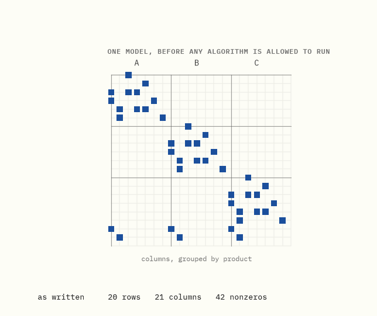
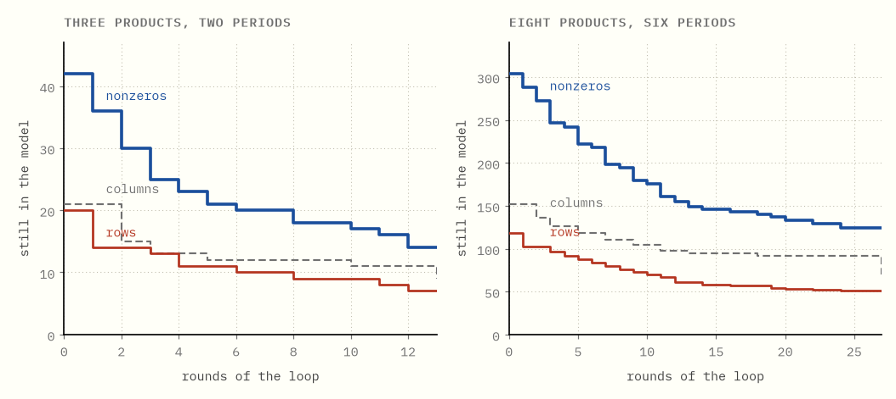
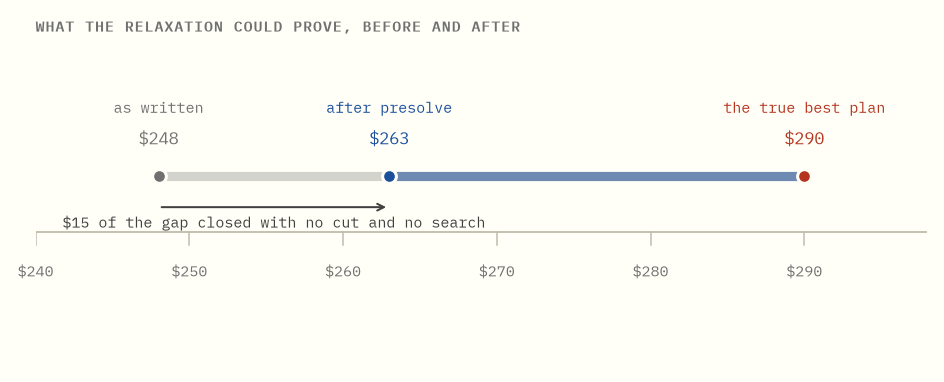

What solvers actually do
What is inside the box, and how to pick one you can actually deploy.
Here is a small production model: three products, two periods, twenty rows and twenty-one columns. Nothing about it is clever. It is the kind of thing you get on a first pass, written the way the problem was described to you.
Hand it to a solver and the first thing that happens is that the solver deletes most of it. Thirteen of the twenty rows go. Twelve of the twenty-one columns go. One of the yes/no decisions in it, a question about whether to set up a production line, is settled outright, by arithmetic, before any search begins.
None of that is the simplex method, and none of it is branch and bound. It happens before either one is allowed to start, it is where a large part of the difference between solvers lives, and it is almost never the part anybody learns.
This guide is in two halves. The first is that machinery, built and run in exact arithmetic so you can watch it work. The second is the part people actually get stuck on: which solvers exist, how they differ, which ones you can put in a container without a licence server ruining your week, and what the public benchmarks can and cannot tell you.
The plan. Chapters 1 to 4 are what a solver does before it solves anything, and what that costs. Chapter 5 is the rest of the machine. Chapters 6 to 9 are the landscape: who is who, what a modelling layer is, why the benchmarks are harder to read than they look, and licensing. Chapter 10 is how to choose.
Every number in the first half is computed by the code in this folder, in exact rational arithmetic, and asserted by a test. The second half is mostly not computable: it is claims about products and licences, which change. Those are dated, sourced, and kept to the things that have stayed true for years.
0What this is

Each square is a place where a variable appears in a constraint. That is the whole model, as written.
Watch what survives. 20 rows, 21 columns and 42 nonzeros become 7, 9 and 14. Two thirds of the model is gone, and the answer has not changed: both versions cost $290, and a solution to the small one can be turned back into a solution to the big one exactly.
This is presolve. It is not an approximation, not a heuristic, and not optional. Every serious solver does it, they all do it differently, and it is one of the main reasons two solvers running "the same algorithm" are not the same speed.
In one sentence. Most of a model is usually redundant, and finding out which part is a separate job from solving it.
1A solver is not an algorithm
If you have read the other guides here, you know how to solve a linear program. Walk the corners, or go through the middle. You could implement one. People do, in a few hundred lines.
What you would have is not a solver, and the gap is not a matter of polish.
A commercial mixed-integer solver is perhaps a million lines. The part that takes a step, the simplex pivot or the interior point iteration, is a small fraction of it. The rest is:
| the part | what it is for |
|---|---|
| presolve | shrink the model before touching it, and tighten what remains |
| postsolve | turn an answer to the shrunken model back into an answer to yours |
| scaling | rewrite the numbers so the arithmetic does not fall apart |
| cutting planes | add constraints that cut off fractions without cutting off answers |
| heuristics | find a good solution early, so the search has something to prune against |
| node selection | decide which part of the search tree to look at next |
| branching rules | decide what to split on, which matters more than almost anything |
| restarts | throw the tree away and start again with what you learned |
| tolerances | decide what counts as zero, which is a policy question, not a fact |
| the algorithm | the pivots or the Newton steps |
The last row is the one in the textbooks. It is not where the difference between a solver that finishes and one that does not usually lives.
There is a well-known measurement of this. Robert Bixby tracked linear programming speed from 1988 to 2004 and separated the two causes: machines got about a thousand times faster, and the algorithms and implementations got about 3,300 times faster on top of that. Thorsten Koch and colleagues repeated the exercise for 2001 to 2020 and found the machine-independent factor had continued to climb, more slowly for LP and considerably faster for mixed-integer problems.
Machine-independent means exactly what it says. Same computer, same model, same answer, thousands of times sooner, because of what the software decided to do before and around the arithmetic.
In one sentence. The algorithm is the part you can write down, and it is a minority of what makes a solver fast.
2What presolve takes out
Here is the model the animation was showing. Three products, two periods. For each product and period there is how much to make, how much to hold at the end of the period, and a yes/no switch for whether the line is open.
| what it says | how it is written |
|---|---|
| stock at the start is nothing | holdA0 = 0, one row per product |
| stock at the end is nothing | holdA2 = 0, one row per product |
| what came in and what went out balance | holdA1 + makeA2 − holdA2 = demand |
| you cannot make anything without setting up | makeA2 − 100 × openA2 ≤ 0 |
| the factory has a capacity each period | makeA1 + makeB1 + makeC1 ≤ 100 |
Demand is 40 units of A in period 2 and nothing in period 1, 25 units of B in each period, and nothing at all for product C, which is on the sheet because it is on the product list, not because anyone ordered it.
Every reduction below is something a person reading that model would notice. The point is that the model, as handed over, cannot notice any of it.
A row with one variable in it is a bound wearing a costume. holdA0 = 0 is
not really a constraint. It is a fact about a variable. Presolve reads it as
0 ≤ holdA0 ≤ 0, writes that on the column, and deletes the row. Six rows go
this way immediately, one for each product's opening and closing stock.
A variable whose two bounds have met is not a variable. holdA0 now has a
lower bound of 0 and an upper bound of 0. There is nothing left to decide.
Presolve substitutes the value into every row that mentions it and removes the
column. Six columns go.
A row already at its limit forces everything in it. Product C's balance row
in period 2 now reads holdC1 + makeC2 − holdC2 = 0, with holdC2 fixed at
zero and the other two unable to go below zero. The smallest the left side can
be is zero, and zero is exactly what it must equal. So every variable in that
row is pinned at the only value that works. Nobody ordered any C, so nobody
makes any C, and now the model knows.
A row that cannot be violated is not a constraint. The capacity row for period 2 allows 100 units. After the reductions above, the most that the surviving variables can add up to in that row is less than 100, whatever they do. The row can never bite. It is deleted.
A row can also just narrow a variable. The balance row for A in period 2
says holdA1 + makeA2 = 40. Both are at or above zero, so neither can exceed
40. Nothing is fixed and nothing is deleted, but two columns are now boxed in,
and that turns out to matter enormously in the next chapter.
Whole numbers round. If a variable has to be an integer and its bounds are now 0.25 and 0.75, there is no value left and the model is infeasible. If its bounds are 0.25 and 1, then it is really 1.
(The names are singleton row, fixed column, forcing row, redundant row, bound tightening and integer rounding. Real solvers run dozens more, including ones that spot two rows saying the same thing and ones that prove a variable can be moved to a bound without loss.)
In one sentence. Each reduction is something obvious, and the model as written has no way to see any of them.
3The cascade, and where the gap opens
Take those reductions one at a time and they are unremarkable. Run them in a loop and something else happens.

If presolve were a checklist applied once, those lines would fall in round one and go flat. They do not. The small model takes 13 rounds to settle and the larger one takes 27, because each reduction is what makes the next one visible. Deleting a row creates a fixed column. Fixing a column empties a row. Emptying a row narrows a bound. Narrowing a bound fixes another column.
Here is the best thing in this guide, and it happens in round 9.
Product B needs 25 units in period 1. The balance row therefore forces
makeB1 ≥ 25. The link row says makeB1 − 100 × openB1 ≤ 0, so
openB1 ≥ makeB1 / 100 ≥ 25 / 100 = 0.25
and openB1 is a yes/no switch, so it is a whole number. The smallest whole
number at or above 0.25 is 1.
The setup happens. Not "probably happens", not "happens in the best solution found so far". It is forced, it is proved, and it is proved by division and rounding, before branch and bound has opened a single node. One of the actual decisions in the model has been made by arithmetic.
Try it yourself → Move demand and the big-M constant, and watch the switch stop being a decision.
That is also the answer to why the big-M constant matters so much. Make it
1,000,000 instead of 100 and the same chain gives openB1 ≥ 0.000025, which
still rounds to 1, so this particular deduction survives. But every fractional
relaxation of that row gets weaker as the constant grows, which is why "just use
a big number" is the most expensive habit in integer modelling.
In one sentence. The reductions feed each other, and the loop can settle a real decision without searching for it.
4What it costs you
The reductions above changed the shape of the model. They also changed what the model can prove about itself, and that is the part that pays.

Ignore the whole-number requirement and solve what is left, and the model as written proves the answer cannot be cheaper than $248. After presolve, the same relaxation proves it cannot be cheaper than $263. The true answer is $290.
No cutting plane was added. No node was explored. $15 of a $42 gap closed, purely from columns being fixed and bounds being narrowed, and a better bound is worth more than a faster pivot, because it prunes the tree rather than walking it. On this instance branch and bound opens 9 nodes on the model as written and 5 on the reduced one. Small numbers, because it is a small model; the mechanism is what scales.
So much for the upside. Now the bill.
Your variables stop existing. Ask the solver for the value of holdA0 and
it may not have one, because that column was gone before the algorithm started.
This is what postsolve is for: it walks the reductions backwards and rebuilds a
solution to the model you handed over. Every solver does this, and it is why
you get your variable back. But if you are reading the internal model, or
attaching callbacks to it, you are working with something that no longer
matches what you wrote.
Sensitivity information gets harder. Shadow prices and ranges, the subject of the duality guide, are attached to rows. When a row has been deleted as redundant, the price that comes back for it is zero, which is correct and often not what the person asking wanted to know. Some solvers restrict presolve automatically when you ask for a sensitivity report, and it is worth knowing whether yours does.
"Presolve says infeasible" is a real answer and an unhelpful one. If the reductions prove there is no solution, you get told at once, which is fast and correct. What you do not get is a nice explanation, because the reasoning is a chain thirteen rounds deep. Most solvers have a separate and much slower mode that will find a small conflicting subset of rows for you, and it is worth finding that flag before you need it.
And it is occasionally slower. On a model with little redundancy, presolve costs time and returns nothing. Rarely, it removes structure that a later part of the solver would have exploited. This is uncommon enough that leaving it on is the right default, and the flag to turn it off is nonetheless the first thing to reach for when a solver behaves inexplicably, because it tells you which half of the machine to suspect.
In one sentence. Presolve buys a stronger bound and a smaller model, and charges you in traceability.
5The rest of the machine
Presolve is the part this guide can compute. It is not the only part, and for mixed-integer problems it is not the largest.
Cutting planes are extra constraints that are true of every whole-number solution but false for the fractional answer the relaxation just produced. Add enough and the relaxation stops being able to lie to you. A modern solver generates a dozen families of them, adds far more than it keeps, and spends real effort deciding which to throw away, because a cut that does not tighten the bound is a row you now have to carry.
Heuristics try to find a decent solution early, by rounding, by fixing things and re-solving, by taking two known solutions and searching between them. The value is not the solution. It is that a good incumbent lets the search prune whole subtrees, and a search with no incumbent prunes nothing.
Branching is the choice of what to split on. It is the single most studied knob in the subject, and the difference between a naive rule and a good one is routinely orders of magnitude in tree size, which the branch and price guide runs into directly.
Numerics is the unglamorous one. Real models arrive with capacities in the millions and yields around 0.0001, and the ratio between the largest and smallest number in your matrix is a better predictor of trouble than its size. Solvers scale the matrix to fight this. Every one of them has tolerances: a number below which a value counts as zero, a violation below which a constraint counts as satisfied. Those are not bugs, they are policy, and two solvers disagreeing about whether your model is feasible is usually two policies disagreeing rather than one of them being broken.
This guide computes none of that, and quoting numbers for it would mean inventing them. What the chapter is for is the shape: when a solver is slow, the question "which of these is going wrong" is more useful than "is my model too big".
In one sentence. Bound quality, a good early solution and sane numerics decide most solves, and none of them is the algorithm.
6Who is who
The landscape splits cleanly, and the split is about money rather than mathematics.
The commercial solvers. Gurobi, IBM CPLEX, FICO Xpress, COPT and MOSEK. They are genuinely fast, they are supported, and on hard mixed-integer models the good ones remain ahead of everything free. They are also expensive, and priced per machine or per core in ways that interact badly with autoscaling. Every one of them has a free size-limited or academic tier.
The open-source solvers. These are the ones worth knowing:
| solver | what it is | licence |
|---|---|---|
| HiGHS | LP, MIP and QP. Simplex, interior point and a first-order method. The serious default | MIT |
| SCIP | Constraint-integer programming. Very strong on hard MIPs, extremely hackable | Apache 2.0 since 8.0.3 |
| CBC and Clp | The old COIN-OR pair. Still everywhere, largely because everything already depends on them | EPL |
| GLPK | Small, old, GNU. Fine for teaching, slow for work | GPL |
| cuOpt | NVIDIA's GPU engine for LP, MIP and routing | Apache 2.0 |
Two changes here matter more than any benchmark. SCIP moved from an academic licence to Apache 2.0 at version 8.0.3, which turned it from something you could publish papers with into something you could ship. And HiGHS has become good enough to be the default answer for anyone who does not have a specific reason to pay, which was not true a decade ago.
The honest summary of the gap: for pure linear programs at ordinary sizes, the free solvers are close enough that the difference rarely decides anything. For hard mixed-integer models the commercial ones are still meaningfully ahead, and the harder your model, the more that is true.
In one sentence. HiGHS or SCIP unless you have a hard integer model and a budget, and the reasons to pay are narrower every year.
7A layer is not a solver
This is the distinction that causes the most confusion, and it is worth getting straight before you compare anything.
You write a model in something. That something is usually not a solver.
Modelling layers let you write a model once and send it to any of several engines: Pyomo, PuLP and python-mip in Python, JuMP in Julia, and the commercial languages AMPL and GAMS. Switching solvers becomes a one-line change, which is the strongest practical argument for using one: it makes the solver decision reversible.
Google OR-Tools is where this gets misread. OR-Tools is a toolkit, not a solver. Inside it are Google's own engines, GLOP for linear programming and PDLP for very large ones, alongside wrappers that let it drive SCIP, HiGHS and the commercial solvers. "We used OR-Tools" does not say which engine solved anything.
The exception is CP-SAT, which is Google's own and is a genuinely different kind of machine. It is a constraint programming solver built on a SAT engine: it works in whole numbers, learns clauses from the conflicts it hits, and does not lean on a linear relaxation the way a MIP solver does. It has won its category at the MiniZinc competition repeatedly. For scheduling, rostering and assignment, where the constraints are logical rather than numerical, it is often the right tool and it will beat an LP-based solver comfortably.
Its limits are the mirror image. It wants integers and bounded variables. Give it genuinely continuous quantities, or a model whose strength lives in its linear relaxation, and a MIP solver is the better answer.
In one sentence. Write through a modelling layer so the solver stays a choice, and know whether the thing you named is a layer, an engine, or both.
8Why the benchmarks cannot be read straight
The obvious move is to look up which solver is fastest. The standard source is Hans Mittelmann's benchmark pages, which have run for years and are the closest thing the field has to a referee.
Read them, and read the note at the top first.
Results for IBM CPLEX and FICO Xpress were removed after those vendors objected, following the 2018 INFORMS annual meeting. Gurobi withdrew in August 2024. MindOpt followed in December 2024. The pages are still valuable and still run, but the leaderboard now shows the solvers that stayed, and the absence of a name is not information about its speed.
That is the first problem. The second is worse and applies to every benchmark ever published: a benchmark is a set of models, and yours is not in it. Solver performance varies over instances by orders of magnitude. A solver that wins on a shifted geometric mean over a public set can be the slower one on your particular model, and the only way to find out is to run yours.
Which is not hard, and is the actual advice. Take ten instances that look like what you will be solving, run every candidate on them with a fixed time limit, and compare. That measurement is worth more than every published table put together, because it is measuring the thing you care about.
Two traps while you do it. Compare like with like: a solver that returns a 0.01% gap has not done the same work as one that proved optimality. And solve each model more than once, because most solvers are deterministic only when their thread count is fixed, and a concurrent run will give you different timings and sometimes different optimal solutions on repeat runs of the same input.
In one sentence. The public tables are missing most of the commercial field by request, and even complete they would not be about your model.
9The licence is the deployment problem
Here is the part nobody warns you about, and it is where most of the pain actually is. The mathematics never fails on a Friday. The licence does.
A commercial solver has to check that you are allowed to run it, and how it checks is the whole story.
Node-locked. A file tied to one machine, usually by its MAC address or host ID. Fine on a laptop. Useless the moment your workload lives on machines that did not exist this morning, because the identity it is locked to is the thing your infrastructure keeps replacing.
Floating. A licence server on your network hands out tokens, and you pay for how many are checked out at once. This works, and it requires that every worker can reach that server, which turns a maths library into a piece of network architecture with a firewall rule and a single point of failure.
Cloud and container licensing. This is the modern answer and the reason the
old pain has eased. Gurobi's Web License Service issues short-lived signed
tokens to a container over the internet, renewed automatically, configured
either by mounting a gurobi.lic file or by setting three environment
variables: GRB_WLSACCESSID, GRB_WLSSECRET and GRB_LICENSEID. That last
form is what makes a solver deployable on Kubernetes at all, because the
credential becomes a secret like every other secret. The other vendors have
their own equivalents.
If you have fought a solver licence in a container, this is almost certainly what you were fighting: a node-locked or floating scheme meeting an environment where machines are disposable and there is no stable host to lock to. The fix is generally not a cleverer Dockerfile. It is a different licence type.
Academic licences are genuinely generous and genuinely restricted. They are free, they are usually full-strength, and they are for academic work. Using one for anything commercial breaches the terms, and "it was only a prototype" is not a defence anyone has enjoyed making. Note also that free tiers are commonly size-limited rather than time-limited, which means your model will work fine until it grows.
And the open-source ones have none of this. No licence server, no tokens, no
node locking, no phone call when you scale to forty workers. pip install highspy and it runs. That is not a small advantage, and it is regularly the
deciding one for a team that would otherwise be slightly better served by a
commercial solver.
The practical rule: decide how you will deploy before you decide what to deploy. Solver choice is easy to reverse behind a modelling layer. A licensing model that does not fit your infrastructure is not.
In one sentence. Pick the licence type your deployment can live with first, because that constraint is harder to change than the solver.
10How to choose
The short version, in the order the questions actually arrive.
| if | then |
|---|---|
| you are learning, or the model is small | HiGHS, through a modelling layer |
| it is a pure LP, at almost any size | HiGHS; reach for a commercial solver or a first-order method only when it stops finishing |
| the model is scheduling, rostering or assignment | try CP-SAT before anything LP-based |
| it is a hard MIP and the answer is worth money | benchmark Gurobi, COPT and Xpress on your own instances |
| you want to hack the search itself | SCIP |
| it is enormous, sparse, and a rough answer is fine | a first-order method: PDLP, or cuOpt on a GPU |
| you cannot manage licence servers | anything open source, and stop worrying |
Three closing observations, which are the ones I would want to have been told.
Modelling beats solver choice, usually by more than an order of magnitude. The chapters above are about a solver deleting two thirds of a model. A better formulation does not need deleting. If a solve is too slow, rewriting the model will usually buy you more than any solver will, and the big-M constant from chapter 3 is the first place to look.
Measure before you buy. The evaluation licences exist for this. Ten of your own instances, a fixed time limit, all candidates.
Keep the solver replaceable. Write through a layer, and the decision you make today stays cheap to revisit. Everything in chapters 6 to 9 changes. SCIP's licence changed. Gurobi left the benchmarks. cuOpt was proprietary and is now Apache 2.0. The one durable move is to not be welded to any of it.
In one sentence. Formulate well, measure on your own models, and keep the solver behind a layer so that none of this has to be decided permanently.
What the plain words are really called
| this guide says | everyone else says |
|---|---|
| shrinking the model before solving it | presolve |
| putting the removed variables back | postsolve |
| a row with one variable in it | a singleton row |
| a variable whose bounds have met | a fixed column |
| a row already at its limit | a forcing row |
| a row that cannot be violated | a redundant row |
| narrowing a variable using a row | bound tightening, or domain propagation |
| what the relaxation can prove | the dual bound |
| the distance between the bound and the best plan | the optimality gap |
| extra rows that cut off fractions | cutting planes |
| the good solution found early | the incumbent |
| the yes/no switch times a big number | a big-M constraint |
| the ratio of largest to smallest coefficient | the numerical range |
| write once, send to any solver | a modelling layer or algebraic modelling language |
Further reading
Bixby's A Brief History of Linear Programming Computation for where the
speedups came from, and Koch and co-authors' Progress in Mathematical
Programming Solvers from 2001 to 2020 for the same exercise done again.
Achterberg's thesis on SCIP is the most detailed public account of what is
actually inside a MIP solver. Mittelmann's pages at plato.asu.edu/bench.html
for benchmarks, read with chapter 8 in mind.
Product and licence details in chapters 6 to 9 were checked in August 2026. They are the parts of this guide most likely to date, which is why they are dated rather than stated flatly.
Running the code
make bootstrap # once, from the repository root
cd solvers && make verify
The presolve here is exact rational arithmetic, which matters more than usual: in floating point, "this row can never be violated" quietly becomes "this row is violated by a millionth", and a reduction that fires on a rounding error deletes a real solution. The tests check every reduction against a brute-force enumeration of every whole point in the model, over four hundred random instances, because presolve is the part of a solver most capable of being confidently wrong.